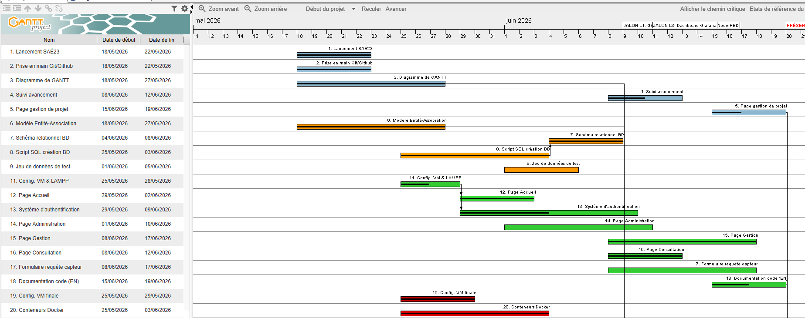
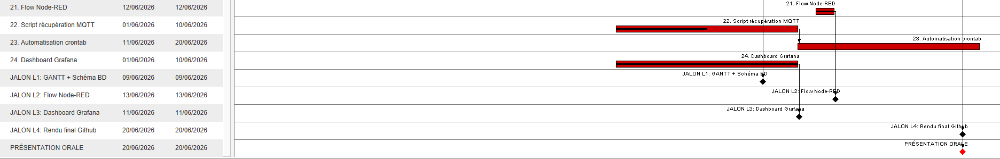
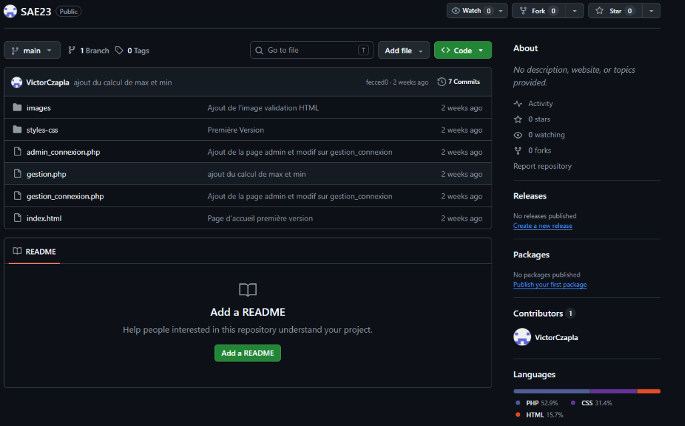
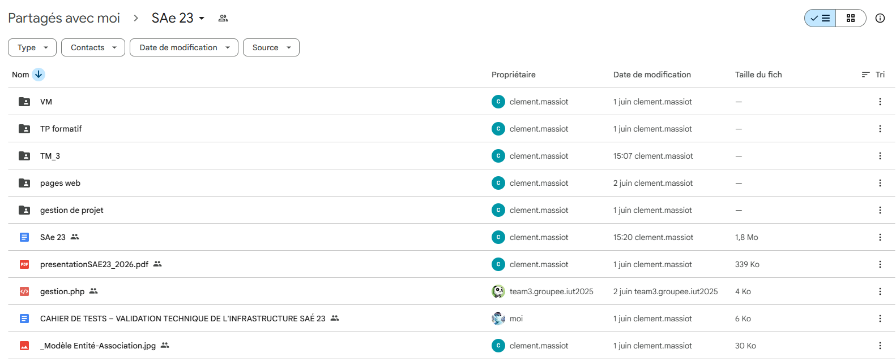
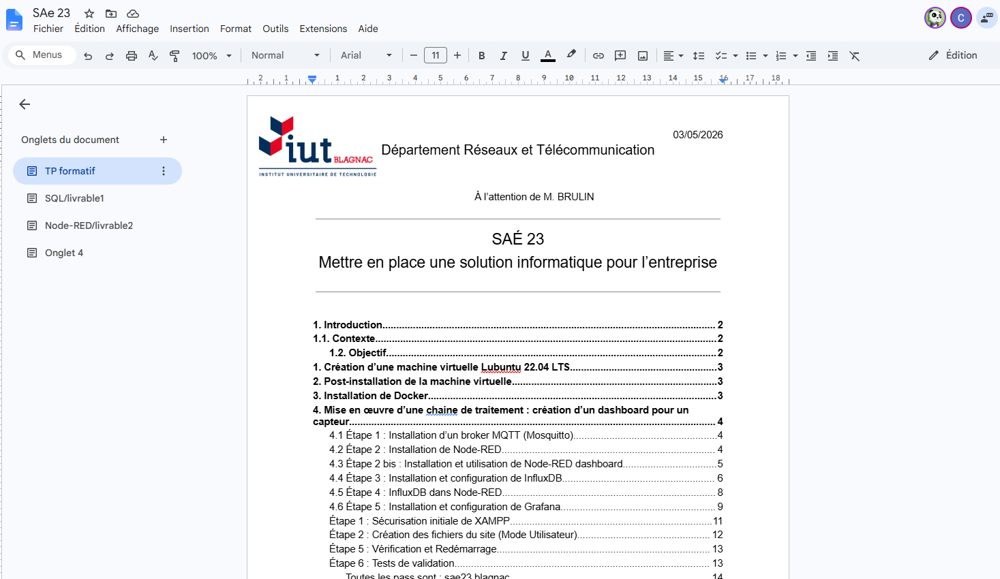

Eléments de gestion collective
Le diagramme de GANTT final

L'une des principales difficultés de cette SAÉ a été la gestion du temps face aux échéances serrées des différents livrables, notamment entre les semaines 23 et 25[cite: 22, 118]. Le cumul du développement du site web dynamique, de la configuration de la base de données MySQL et de la mise en place de la chaîne de traitement Docker en l'espace de quelques semaines a nécessité une charge de travail intense [cite: 97, 98, 100, 118].

Nous avons dû redoubler d'efforts sur les derniers jours pour finaliser l'intégration complète avant la date limite du rendu final[cite: 118].
Les outils collaboratifs
Github

L'usage du GitHunb permet de traiter un fichier d'un espace de travail depuis son site Internet
Google docs et Google drive

Google drive a permit à notre groupe de partager des fichiers de travaux effectués et donc ça nous a permit de voir ce qu'à pu faire un de nos membres et même de perfectionner le travail rendu. Grâce au partage par adresse mail des membres de nos groupes.

Google Docs permet de créer et modifier des documents texte directement dans un navigateur web et même de partager ce document avec des membres de l'equipes à l'aide d'un compte GMAIL.
Les synthèses individuelles
Nura
Clément
Victor
Angelo
Durant cette SAÉ, j'ai pris en charge la réalisation de plusieurs pages HTML, notamment les pages de Consultation et de Gestion de projet. Pour y parvenir, je me suis appuyé sur les notions acquises dans la ressource R209 (Mise en forme d'une page web dynamique) ainsi que sur mon projet de SAÉ14 (page semantique), qui m'a servi de base pour la structure HTML et une partie de la rédaction du compte rendu. Concernant la base de données, j'ai utilisé PhpMyAdmin pour concevoir les tables requises en exploitant le langage SQL, en lien avec les compétences de la ressource R207. Au cours du développement, j'ai été confronté à des difficultés concernant certaines commandes de programmation qui m'étaient inconnues ; j'ai su surmonter ce problème en effectuant des recherches autonomes sur Internet. Enfin, j'ai activement participé à la mise en place du serveur XAMPP, avant qu'un de mes camarades ne finalise sa configuration.
Conclusion